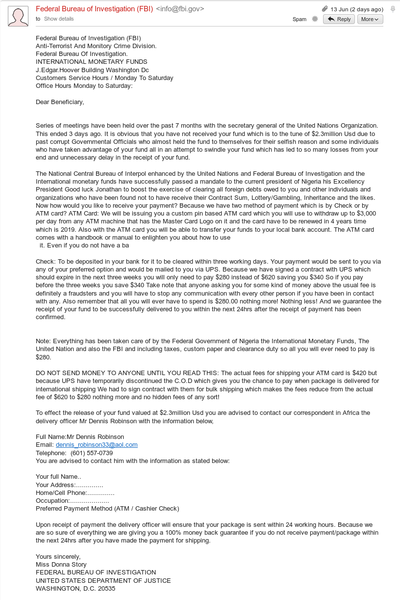

ESafety
What are Hackers?
Learn It
- We hear about "Hackers" all the time in the media. "Hackers" stealing state secrets, "Hackers" stealing photos from iCloud and SnapChat, "Hackers" stealing money from bank accounts.
- These "Hackers" sound like a very nasty bunch of people.
- Then again, there are these things called "Hackathons" like this one that seems focused on producing solutions to climate change and human rights. There's also this site called Hacker News filled with technical articles about computing and politics.
- It seems that not everyone can agree on what the term Hacker means.
Research It
- Have a read of the this wikipedia article on what is meant by the term Hacker]
- You don't have to read the whole article, just the first few paragraphs.
Learn It
- So it appears, when we are tying to be safe online, there are some hackers that we should be wary of, and others that can even help us.
- To make sure there is no confusion, we'll use the term cracker to refer to black-hat hackers.
How do crackers crack?
Learn It
- There are primarily two ways in which a cracker can gain access to your computer, data, or online accounts.
- The first method (and the most worrying) are called Zero Days
Research It
- Try and answer the following questions. The answers will help you with the badge at the end.
- What is meant by the term Zero Day
- What is the significance of the word Zero
- Can you list some recent Zero Day exploits that have been reported by the media.
Learn It
- As users there is not much we can do about Zero Day exploits.
- We have to rely on white-hat hackers to discover them before the crackers do, so that the bugs can be patched.
Learn It
- The second method by which crackers work is to rely on Human fallibility. That is the concept that we all make mistakes or stupid decisions.
Research It
- Password security is one of the major ways we can ensure we stay safe in a digital world. If a cracker has your password or can guess it, then you're in trouble.

- Edward Snowden used to be a Hacker for the NSA (The USA National Security Agency), so he should know a thing or two about passwords.
Try It
- Come up with a list of guidance for choosing strong passwords.
Learn It
- Another method used by crackers is called Social Engineering. This relies on using Psychological techniques to get users to allow a cracker access to their computer or accounts.
- There are several methods of Social Engineering commonly used, some of which are:
- Phishing
- Pretexting
- Baiting
Try It
- Phishing is a method of social engineering whereby the crackers send out emails to their intended targets.
- They might ask them to send personal details, or download a particular file.
- The details can be used to commit identity fraud, and the files to be downloaded are almost always malware.
- Have a look at this email.

- List all the things about the email that you consider suspicious.
Learn It
- Pretexting is a little trickier to perform.
- The cracker will usually phone up a target on some pretext such as that their bank account has seen some suspicious activity. They will then ask for personal details and even passwords over the phone, which will allow the cracker to gain access to the victims accounts.
- Sometimes the victim isn't even involved in Pretexting. A cracker might phone up Amazon, for instance, and convince a staff member that they need to reset the victims password.
Learn It
- Baiting relies on people's greed.
- A cracker will load a USB drive with malware and then leave it somewhere, like a coffee shop or the floor of a car-park.
- An individual that picks up the drive and plugs it into their computer will automatically have the malware loaded onto their system.
What is malware?
- Malware is short for Malicious Software.
- So malware are programs that have been written to perform nasty operations on your computer. Malware might wipe files, lock files away, log key presses or send information on the user to a cracker.
Research It
- There are many classes of malware. Some are listed below.
- Viruses
- Trojans
- Ransomware
- For each of the types of malware, find out what they do and how to protect yourself from them.
Badge It
- You have been tasked with coming up with advice for your teachers at your school. Come up with a single (email-able) document that could be distributed to teachers to inform them of how to keep themselves protected both on and offline.